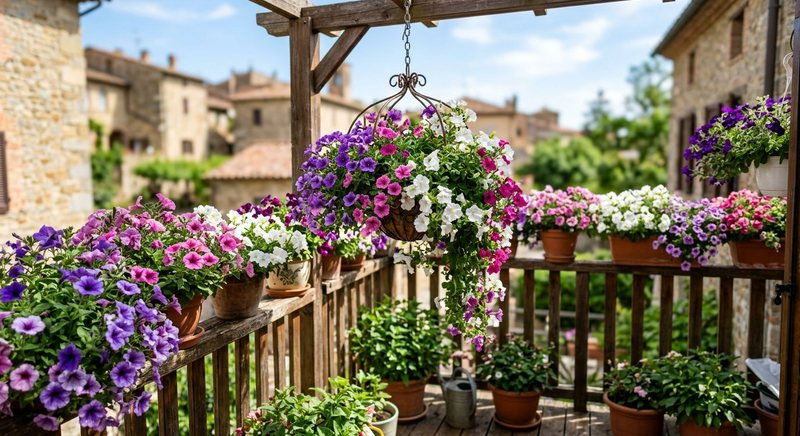

Виды растений · 5 мин чтения
Подкормка петунии в горшках и кашпо: удобрение, полив и прищипка
Петуния в кашпо быстро наращивает побеги и цветки, а частый полив постепенно вымывает питание из небольшого объёма субстрата. Ей нужны солнце, вода и предсказуемая схема удобрения без превышения дозы.
Материал обновлён 24.10.2026 · Справочная информация, не заменяет инструкцию на упаковке.

Солнце и объём кашпо задают предел цветения
В тени петуния вытягивается и даёт меньше цветков, даже если раствор вносят регулярно. Для обильного сезона ей нужно максимально светлое место и достаточный объём субстрата под корневую систему. Маленькое кашпо на жарком балконе просыхает несколько раз быстрее большого контейнера, поэтому один график полива для всех посадок не подходит.
При посадке проверьте, есть ли в смеси стартовое или долгодействующее удобрение. Эта информация определяет начало жидкой схемы. Не уплотняйте субстрат до состояния, при котором вода стоит на поверхности. Хороший сток нужен и балконному ящику, и подвесной корзине.
Полив в жару: почему питание уходит быстрее
Летом петуния может требовать воды ежедневно, а в маленькой подвесной корзине на ветру — ещё чаще. Каждый полноценный полив частично выносит растворённые вещества через дренаж. Но это не означает, что удобрение добавляют в каждую лейку без инструкции. Сначала определите схему производителя и учитывайте стартовую заправку грунта; частый полив водой и плановое питание остаются разными событиями.
Не вносите концентрат в полностью пересохший горячий ком. Сначала восстановите влажность обычной водой, если это соответствует инструкции, и дайте лишнему стечь. Увядание в полдень при мокром субстрате может быть связано с жарой и корнями, а не с жаждой. В такой ситуации дополнительная лейка с удобрением не является первой помощью.
- кашпо стоит на солнце и не перегревает корни чрезмерно;
- известно, есть ли долгодействующее питание в субстрате;
- ком не пересох до отставания от стенок;
- лишняя вода свободно выходит после полива;
- дата последнего жидкого удобрения записана.
Жидкая подкормка в течение сезона
Используйте удобрение для цветущих или балконных растений строго по этикетке. Приготовьте раствор на точный объём воды; для нескольких кашпо удобна одна мерная лейка и журнал. Расчёт концентрата можно сверить со статьёй как развести жидкое удобрение. Если растение уже получает гранулы длительного действия, не накладывайте полную жидкую схему без понимания суммарной нормы.
Семяздрав заявлен продавцом для цветов и рассады. Для петунии ориентируйтесь на актуальную этикетку, способ внесения и состояние посадок. Раствор распределяйте по субстрату, стараясь не заливать цветки. Опрыскивание по листу допустимо только при прямом разрешении производителя; на солнце и в жару его не проводят.
Прищипка, удаление отцветших цветков и середина сезона
Многие современные сорта сами ветвятся, но вытянувшиеся побеги после пасмурного периода или загущенной посадки можно аккуратно укоротить по типу растения. Отцветшие цветки и семенные коробочки удаляют, чтобы куст выглядел опрятно. Обрезка не заменяет свет: если кашпо остаётся в тени, новые побеги снова вытянутся.
К середине лета петуния может выглядеть уставшей из-за жары, корней во всём объёме и пропущенных поливов. Сначала оцените влажность, вредителей и состояние побегов. Лёгкая корректировка формы и возвращение к ровному поливу часто важнее смены удобрения. Общие причины слабого цветения разобраны в статье о подкормке цветущих растений.
Рассада петунии и взрослое растение — разные дозировки внимания
Молодые сеянцы в стаканчиках чувствительнее взрослого куста в кашпо. Не переносите на рассаду схему цветущего растения: у неё меньше корней, другой объём субстрата и часто уже есть стартовая заправка. Для сеянцев важны сильный свет и аккуратная влажность. Общий подход к первому питанию рассады описан в хабе об удобрении рассады дома.
После высадки в постоянный контейнер дайте корням освоить субстрат. Если смесь содержит питание, не начинайте жидкие внесения автоматически в день посадки. Запишите состав грунта, дату пересадки и первое удобрение. Такой учёт особенно полезен, когда на балконе одновременно стоят рассада, молодые кусты и взрослые цветущие петунии.
После сильного дождя на открытом балконе кашпо может оказаться одновременно переувлажнённым и промытым от части растворимого питания. Не компенсируйте это двойной дозой на следующий день. Сначала дайте субстрату вернуться к нормальному ритму просыхания, оцените листья и только затем следуйте плановой дате и норме удобрения.
Частые вопросы
Как часто подкармливать петунию в кашпо?
По инструкции выбранного удобрения с учётом стартовой заправки субстрата. Частый полив вымывает питание, но это не разрешает превышать концентрацию.
Почему петуния вытянулась и мало цветёт?
Проверьте количество солнца, объём кашпо, пропуски полива и необходимость корректировки побегов. Удобрение не компенсирует тень.
Можно ли вносить удобрение при каждом поливе?
Только если такая схема и концентрация прямо предусмотрены этикеткой. Самостоятельно превращать каждый полив в питательный нельзя.
Нужно ли удалять отцветшие цветки петунии?
Да, у многих сортов это поддерживает аккуратный вид и направляет ресурсы на новые побеги и бутоны. Удаляйте также повреждённые листья.